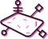
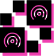
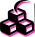
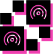

Thank you for dialing into TVC-16!
We hope this system will bring you entire satisfaction.
The TVC-16 is my personal server/demo machine, running on a super low-tier Vultr VPS.
I thought it'd be cool to have a proper landing page this time.
You can talk to me on Twitter if that's your thing.

I have a few personal software development projects, some active, some dead as a doornail.
You'll find the bigger ones down below.
Source code for all of those can be found on my Github.
DoujinSoft is a browseable archive for content made for the 2010 Nintendo DS game WarioWare DIY.
It's built in Java, leveraging the reverse-engineering efforts made on the game.
 RSS Live Tiles is a Universal Windows Platform application made for displaying entirely customizable content in Start Menu Live Tiles, using RSS feeds as data sources.
It uses C# and serves as my testbed for new stuff landing on the Windows 10 SDK.
I have a few personal software development projects, some active, some dead as a doornail.
You'll find the bigger ones down below.
Source code for all of those can be found on my Github.
 LANraragi
is a web manager for manga/doujinshi archives, with a built-in reader and namespace/tag support.
It's built using Perl and the excellent Mojolicious Framework.
It's built using Perl and the excellent Mojolicious Framework.
DoujinSoft is a browseable archive for content made for the 2010 Nintendo DS game WarioWare DIY.
It's built in Java, leveraging the reverse-engineering efforts made on the game.
 RSS Live Tiles is a Universal Windows Platform application made for displaying entirely customizable content in Start Menu Live Tiles, using RSS feeds as data sources.
It uses C# and serves as my testbed for new stuff landing on the Windows 10 SDK.